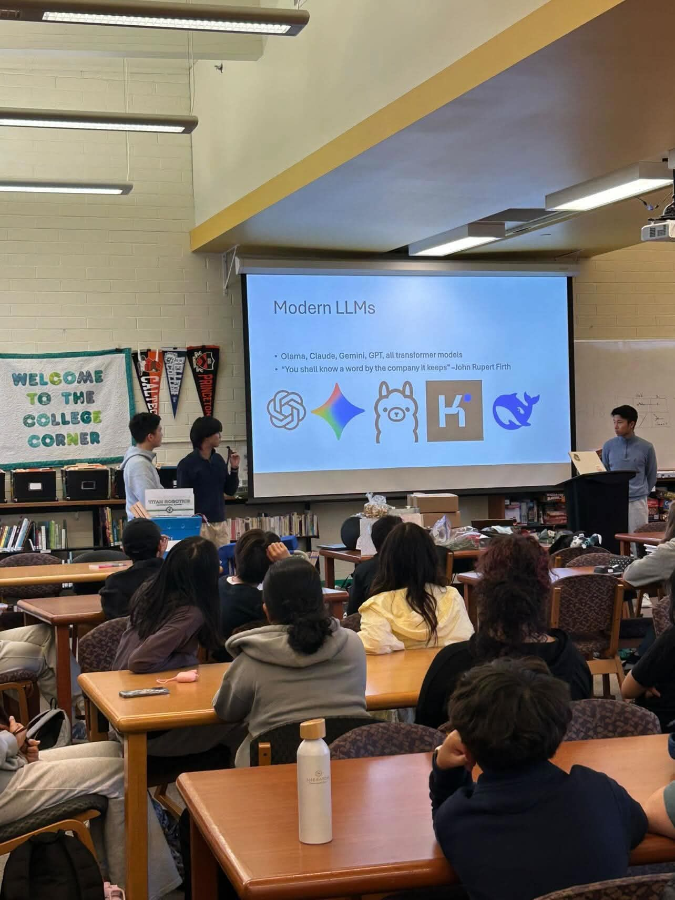
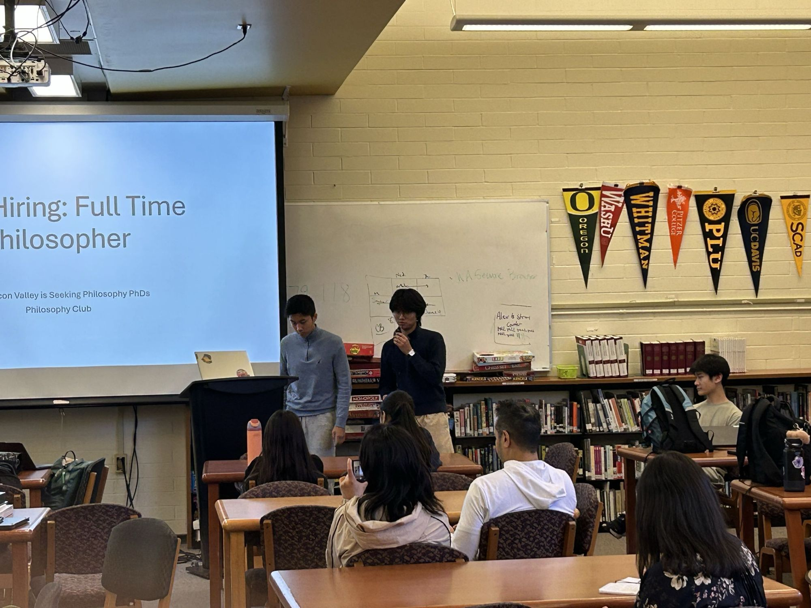
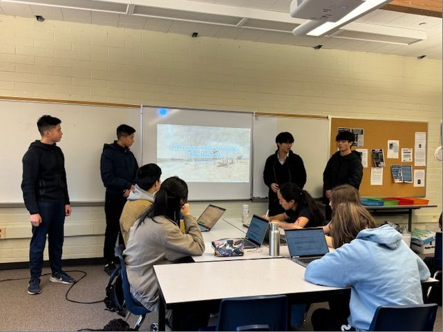
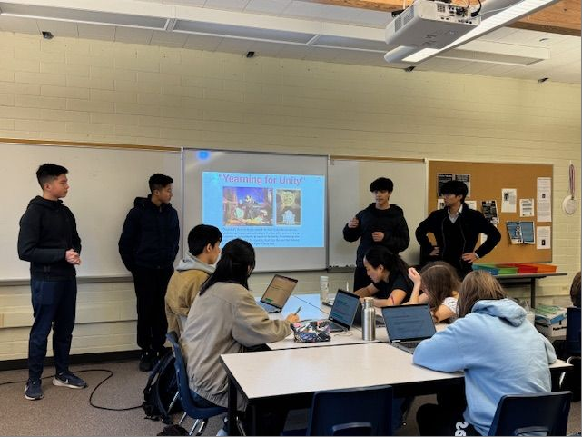

Lectures
Lecture Archive


June 9, 2026
Now Hiring: Full Time Philosopher
Why Silicon Valley is Seeking Philosophy PhDs
AI Showcase, Bellevue WA
ESP made the case that the AI era is the best moment in centuries to be a philosopher. Drawing on Henry Ajder's observation that "It's probably the best time to be a philosopher since Aristotle was hired as tutor to Alexander the Great," the lecture explored why philosophy has re-emerged as a sought-after field in the age of large language models.
Modern LLMs: A survey of today's leading AI systems and how transformer architectures learn meaning from context, raising foundational questions about language, knowledge, and mind.
AI & the Human Person: Anchored by Pope Leo XIV's encyclical Magnifica Humanitas, the lecture examined consciousness, authorship, moral responsibility, and what it means to be human in a world of synthetic minds.
Access the Presentation →

June 5, 2025
Moral Implications of Synthetic Intelligence
Ethics of AI, STEM Fair, International School
Artificial Consciousness & Personhood: Subjective experience is what it feels like to be something. It is central to debates about machine consciousness and mind. Can AI really feel, or just simulate feeling?
Existential & Ethical Risk: As artificial systems grow more capable, the questions shift from theoretical to urgent. What obligations do we have toward synthetic minds, and what risks do they pose to us?
Access the Presentation →Closing Question: As Michelangelo captured the divine spark between God and man, today we stand at a similar threshold, but we are in the role of creator. If we breathe consciousness into artificial minds, what responsibilities come with that act? Are we gods, parents, engineers, or something else entirely?


March 16, 2026
Introduction to Albert Camus: Absurdism and the Human Condition
Guest Lecture, Cecile Casanova's French Literature Class
Invited to speak to a French Literature class preparing to read The Stranger, ESP delivered a brief overview of Camus and his philosophy to give students the context they needed before diving into the novel.
The Absurd Camus argued that the fundamental tension of human existence is the conflict between our desperate need for meaning and the universe’s complete silence on the matter. This collision, not the meaninglessness itself, is what he called the Absurd.
Revolt, Freedom, and Passion Rather than surrendering to nihilism or escaping into religion, Camus proposed that we must embrace the Absurd, living fully in spite of it. Through works like The Stranger, The Plague, and The Myth of Sisyphus, he traced what it means to live with honesty and defiance in a world without inherent meaning.
Access the Presentation →

March 23, 2025
Reason, Knowledge, and the Structure of Experience: An Introduction to Kant
Philosophy of Mind & Epistemology, International School
The Limits of Human Knowledge: Kant argued that our minds do not passively receive the world — they actively shape it. Space, time, and causality are not features of reality we discover, but frameworks the mind imposes on experience.
Logic and the Categorical Imperative: From the structure of rational thought to the foundation of moral duty, this lecture traced how Kant built an entire ethical system from the laws of reason alone.
Access the Kant Toolkit →